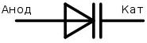

1.5.7. Варикапы и туннельные диоды
Варикап – это полупроводниковый диод, предназначенный для работы в качестве конденсатора, емкость которого управляется напряжением.
Условное графическое обозначение варикапа – 
На варикап подают обратное напряжение. Барьерная емкость варикапа уменьшается при увеличении (по модулю) обратного напряжения. Характер изменения емкости у варикапа такой же, как и у обычного диода.
Туннельный диод
Это полупроводниковый диод, в котором используется явление туннельного пробоя при включении в прямом направлении. Характерной особенностью туннельного диода является наличие на прямой ветви вольт-амперной характеристики участка с отрицательным дифференциальным сопротивлением.
Условное графическое обозначение туннельного диода –
Обычные диоды при увеличении прямого напряжения монотонно увеличивают пропускаемый ток. В туннельном диоде квантово-механическое туннелирование электронов добавляет горб в вольтамперную характеристику, при этом, из-за высокой степени легирования p и n областей, напряжение пробоя уменьшается практически до нуля. Туннельный эффект позволяет электронам преодолеть энергетический барьер в зоне перехода с шириной 50..150 A при таких напряжениях, когда зона проводимости в n-области имеет равные энергетические уровни с валентной зоной р-области. При дальнейшем увеличении прямого напряжения уровень Ферми n-области поднимается относительно р-области, попадая на запрещённую зону р-области, а поскольку тунелирование не может изменить полную энергию электрона, вероятность перехода электрона из n-области в p-область резко падает. Это создаёт на прямом участке вольт-амперной характеристики участок, где увеличение прямого напряжения сопровождается уменьшением силы тока. Данная область отрицательного дифференциального сопротивления и используется для усиления слабых сверхвысокочастотных сигналов.
Рис.7.7. Вольт-амперная характеристика туннельного диода.